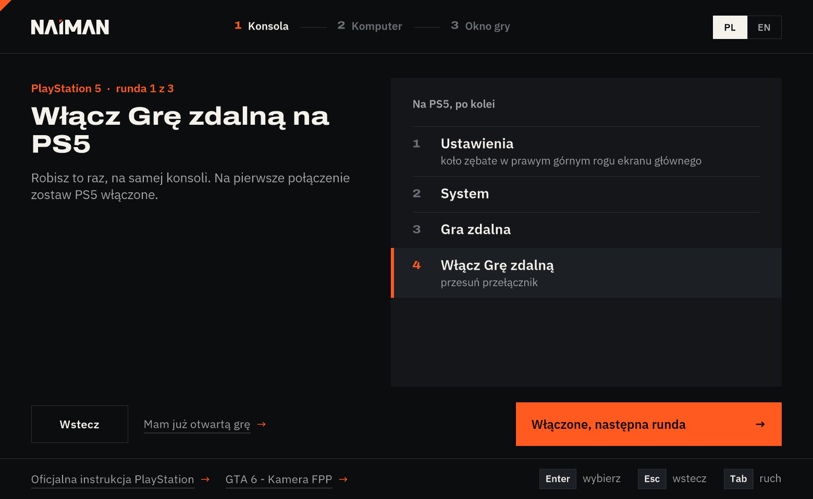
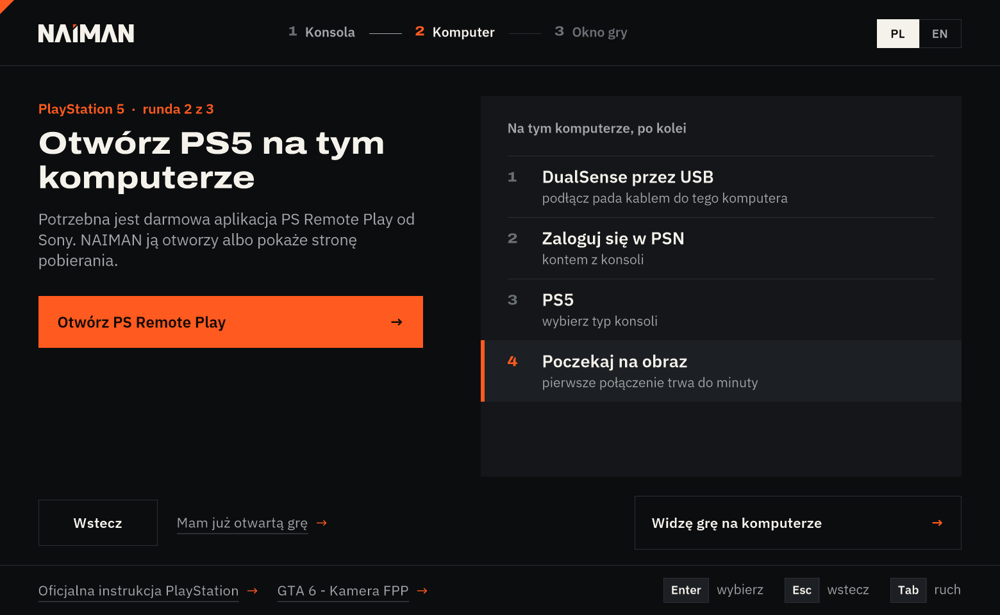
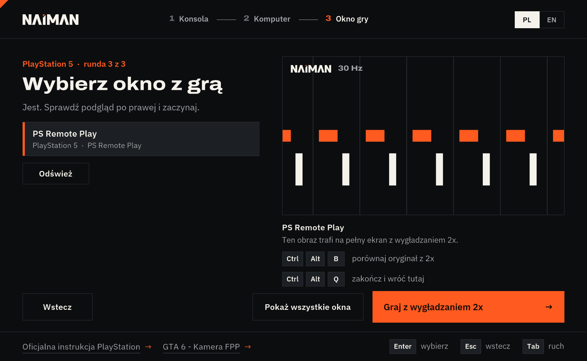

PlayStation 5
Runda 1
Na PS5
Raz, na samej konsoli. Na pierwsze połączenie zostaw PS5 włączone.
- Ustawieniakoło zębate w prawym górnym rogu ekranu głównego
- System
- Gra zdalna
- Włącz Grę zdalnąprzesuń przełącznik

Runda 2
Na komputerze
Potrzebna jest darmowa aplikacja PS Remote Play od Sony. Działa też chiaki-ng. W NAIMAN wybierz PlayStation 5 i przejdź do rundy 2.
- DualSense przez USBpodłącz pada kablem do komputera
- Otwórz PS Remote Playprzycisk w NAIMAN albo strona pobierania
- Zaloguj się w PSNkontem z konsoli
- PS5wybierz typ konsoli
- Poczekaj na obrazpierwsze połączenie trwa do minuty

Runda 3
W NAIMAN
Okno znajduje się samo. Sprawdzasz podgląd na żywo i zaczynasz.
- Widzę grę na komputerzeprzycisk na dole rundy 2
- Twoje okno z grązaznaczone od razu, gdy pasuje tylko jedno
- Graj z wygładzaniem 2xobraz przechodzi na pełny ekran tego monitora
